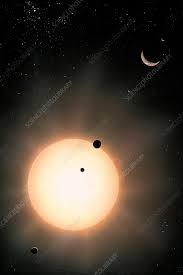

Bu, Kepler tarafından keşfedilen ilk kompakt güneş sistemiydi ve bir sistemin Merkür'ün yörüngesinde en az beş gezegenle sıkıca paketlenebileceğini ve hala kararlı olabileceğini ortaya koydu.

Gezegen oluşum fikirlerine yepyeni bir bakış açısı getirdi ve bizimki gibi birden fazla küçük gezegen sisteminin ortak olabileceğini öne sürdü.
Kredi: Credits: NASA/JPL-Caltech